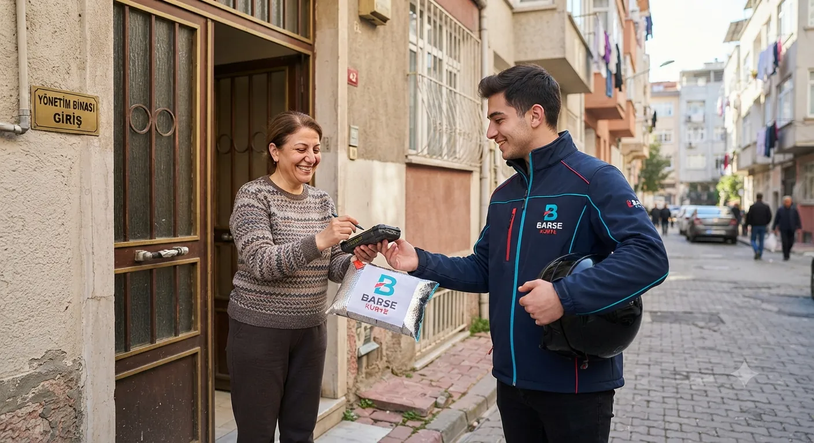

Otogar Kurye
15 Temmuz Demokrasi Otogarı, şehirler arası gönderilerin İstanbul'daki en büyük çıkış kapısı. Buradaki kurye işi otobüs saatiyle yarışıyor: gönderinin firmaya kaydının zamanında yapılması teslimin tamamını belirliyor.
Otogar bölgesinde en çok taşıdığımız gönderiler
Her bölgenin kendine göre bir ritmi var. Otogar tarafında gün içinde en sık karşımıza çıkan işler bunlar.
Şehirler arası gönderi teslimi
Otobüs firmalarına kayıt
Acil evrak aktarımı

Otogar için üç farklı hız
Gönderinizin aciliyetine göre seçin; üçünde de aynı kurye kalitesi ve aynı takip düzeni geçerli.
Normal Kurye
Gün içinde teslim edilmesi yeterli olan evrak ve paketler için planlı, en uygun maliyetli seçenek.
Express Kurye
Otogar bölgesindeki en yakın kurye öncelikli olarak yönlendirilir, teslimat sıraya girmez.
VIP Kurye
Gönderinize özel kurye atanır; yol boyunca başka hiçbir adrese uğramadan doğrudan teslimata gider.
Otogar genelinde kurye hizmeti verdiğimiz noktalar
Aşağıdaki mahalle ve semtlerin tamamına alım ve teslim yapıyoruz. Listede göremediğiniz bir adres varsa da çıkıyoruz; arayıp sormanız yeterli.
- Altıntepsi kurye
- Bayrampaşa Yenidoğan kurye
- Cevatpaşa kurye
- Otogar kurye
- Terazidere kurye
- Yıldırım kurye
- Bayrampaşa Merkez kurye
- Kartaltepe kurye
- Kocatepe kurye
- Vatan kurye
Otogar'da en çok teslimat yaptığımız yerler
Bu noktalarda giriş prosedürünü, otoparkı ve teslim akışını zaten biliyoruz; bu da her seferinde birkaç dakika kazandırıyor.
- 15 Temmuz Demokrasi Otogarı
- Otogar peron bölgesi
- Kargo firmaları hattı
- Bayrampaşa çıkışı
- Esenler bağlantısı
- Metro istasyonu çevresi
Otogar'dan çıkan gönderilerde tahmini süre ve ücret
Aşağıdaki rakamlar hafta içi gündüz saatleri, standart paket ve normal tarife içindir. Mesafe ve ücret, fiyat hesaplayıcımızla aynı formülden hesaplanır.
Gece (20:00–06:00) ve hafta sonu tarifesi ile hacimli gönderilerde ücret farklılaşır. Kesin fiyat için kurye fiyatları sayfamıza bakabilir ya da fiyat hesaplama aracını kullanabilirsiniz.
Otogar kurye hizmeti hakkında sorular
Otobüs saatine yetişecek gönderi taşıyor musunuz?
Evet. Kalkış saatini söylediğinizde çıkışı ona göre planlıyor, kayıt bilgisini size iletiyoruz.
Otogardan gelen gönderiyi teslim alıp adrese getirir misiniz?
Getiririz. Kargo kodu ve firma bilgisini paylaşmanız yeterli; gönderiyi alıp adresinize ulaştırıyoruz.
Otogar'da kurye kaç dakikada gelir?
Talebi aldığımız anda bölgeye en yakın kurye yönlendirilir. Otogar ve çevresinde alım genellikle 20–40 dakika içinde yapılır; teslim süresi ise mesafeye göre değişir. Örneğin İstanbul Otogarı yönüne yaklaşık 2 km'lik güzergâhta teslim ortalama 20–35 dakika sürer.
Otogar kurye ücreti ne kadar?
Ücret mesafeye, teslimat hızına, paket boyutuna ve saate göre belirlenir. İstanbul içi teslimatlarımız 380 ₺ taban ücretten başlar; ilk 5 kilometre bu ücrete dahildir. Otogar–İstanbul Otogarı gibi yaklaşık 2 km'lik bir güzergâhta standart tarife tahmini 380 ₺ civarındadır. Kesin fiyat için adresleri iletmeniz yeterli.
Otogar çevresinde hizmet verdiğimiz diğer bölgeler
Otogar'a kurye mi lazım?
Alım ve teslim adresini söyleyin; net fiyatı dakikalar içinde verelim, kuryeyi hemen yönlendirelim.